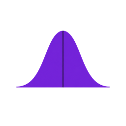

<!-- Chase Analytics navigation — synced via scripts/integrate_chase_nav.py -->
<header class="chase-header" id="chaseHeader">
<meta charset="UTF-8">


  <nav class="chase-nav">
    <a href="chase_analytics_mlb_oem_v7.html" class="chase-logo" title="Chase Analytics — Opening Dashboard">
      
      <span class="chase-nav-logo-fallback" style="display:none;font-weight:700;color:#fff;">Chase Analytics</span>
    </a>
    <div class="chase-nav-links">
      <a href="chase_analytics_mlb_oem_v7.html" class="chase-nav-link" data-nav="opening">Opening</a>
      <a href="chase_analytics_mlb_oem_v7.html#section-matchups-hero" class="chase-nav-link" data-nav="matchups">Matchups</a>
      <a href="team_rankings.html" class="chase-nav-link" data-nav="team-rankings">Team Rankings</a>
      <a href="chase_analytics_mlb_oem_v7.html#section-research-lab" class="chase-nav-link" data-nav="research">Research Lab</a>
      <div class="chase-dropdown">
        <button type="button" class="chase-nav-link" aria-expanded="false" aria-haspopup="true">
          Profiles
          <svg xmlns="http://www.w3.org/2000/svg" viewBox="0 0 20 20" fill="currentColor" aria-hidden="true">
            <path fill-rule="evenodd" d="M5.23 7.21a.75.75 0 011.06.02L10 11.168l3.71-3.938a.75.75 0 111.08 1.04l-4.25 4.5a.75.75 0 01-1.08 0l-4.25-4.5a.75.75 0 01.02-1.06z" clip-rule="evenodd"/>
          </svg>
        </button>
        <div class="chase-dropdown-menu">
          <a href="team_profile.html" class="chase-dropdown-item">Team Profile</a>
          <a href="pitcher_profile.html" class="chase-dropdown-item">Pitcher Profile</a>
          <a href="bullpen_report.html" class="chase-dropdown-item">Bullpen Profile</a>
          <div class="chase-dropdown-divider"></div>
          <a href="batter_profile.html" class="chase-dropdown-item">Batter Profile</a>
        </div>
      </div>
      <a href="glossary.html" class="chase-nav-link" data-nav="glossary">Glossary</a>
    </div>
    <div class="chase-status">
      <div class="chase-timestamp">
        <span class="chase-pipeline-dot" id="pipelineStatus" title="Pipeline: Fresh"></span>
        <span id="lastUpdated">syncing…</span>
      </div>
      <button type="button" class="chase-hamburger" id="hamburgerBtn" aria-label="Open menu">
        <span></span><span></span><span></span>
      </button>
    </div>
  </nav>
</header>
<div class="chase-mobile-overlay" id="mobileOverlay"></div>
<div class="chase-mobile-menu" id="mobileMenu" aria-hidden="true">
  <div class="chase-mobile-header">
    <a href="chase_analytics_mlb_oem_v7.html" class="chase-logo" title="Chase Analytics">
      
      <span class="chase-nav-logo-fallback" style="display:none;">Chase Analytics</span>
    </a>
    <button type="button" class="chase-mobile-close" id="mobileClose" aria-label="Close menu">
      <svg xmlns="http://www.w3.org/2000/svg" width="20" height="20" viewBox="0 0 24 24" fill="none" stroke="currentColor" stroke-width="2" stroke-linecap="round" stroke-linejoin="round" aria-hidden="true">
        <line x1="18" y1="6" x2="6" y2="18"></line>
        <line x1="6" y1="6" x2="18" y2="18"></line>
      </svg>
    </button>
  </div>
  <div class="chase-mobile-brand" aria-hidden="true">
    
  </div>
  <div class="chase-mobile-nav">
    <a href="chase_analytics_mlb_oem_v7.html" class="chase-mobile-link" data-nav="opening">Opening Dashboard</a>
    <a href="chase_analytics_mlb_oem_v7.html#section-matchups-hero" class="chase-mobile-link" data-nav="matchups">Matchups</a>
    <a href="team_rankings.html" class="chase-mobile-link" data-nav="team-rankings">Team Rankings</a>
    <a href="chase_analytics_mlb_oem_v7.html#section-research-lab" class="chase-mobile-link" data-nav="research">Research Lab</a>
    <div class="chase-mobile-section">Profiles</div>
    <a href="team_profile.html" class="chase-mobile-link">Team Profile</a>
    <a href="pitcher_profile.html" class="chase-mobile-link">Pitcher Profile</a>
    <a href="bullpen_report.html" class="chase-mobile-link">Bullpen Profile</a>
    <a href="batter_profile.html" class="chase-mobile-link">Batter Profile</a>
    <a href="glossary.html" class="chase-mobile-link" data-nav="glossary">Glossary</a>
  </div>
  <div class="chase-mobile-status">
    <div class="chase-timestamp">
      <span class="chase-pipeline-dot" title="Pipeline: Fresh"></span>
      <span id="mobileLastUpdated">syncing…</span>
    </div>
  </div>
</div>
